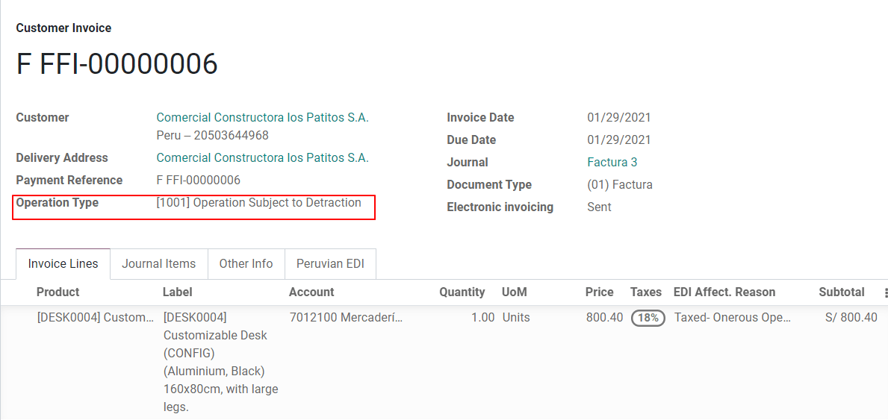

秘鲁¶
模块¶
Install the following modules to utilize all the current features of the Peruvian localization.
名称 |
技术名称 |
描述 |
|---|---|---|
Peru - Accounting |
|
Adds accounting features for the Peruvian localization, which represent the minimal configuration required for a company to operate in Peru and under the SUNAT regulations and guidelines. The main elements included in this module are the chart of accounts, taxes, document types. |
Peru - E-invoicing |
|
Includes all technical and functional requirements to generate and receive electronic invoices online based on the SUNAT regulations. |
Peru - Accounting Reports |
|
Includes the following financial reports:
|
Peruvian - Electronic Delivery Note |
|
Adds the delivery guide (Guía de Remisión), which is needed as proof that you are sending goods between A and B. It is only when a delivery order is validated that the delivery guide can be created. |
Peruvian eCommerce |
|
Enables the identification type in eCommerce checkout forms and the ability to generate electronic invoices. |
Peruvian - Point of Sale with PE Doc |
|
Enables contact fiscal information to be editable from a PoS Session to generate electronic invoices and refunds. |
注解
Odoo 会根据创建数据库时选择的国家自动为公司安装相应的软件包。
The Peruvian - Electronic Delivery Guide module depends on the Inventory application to be installed.
配置¶
安装秘鲁语本地化模块¶
转到“应用程序”并搜索“秘鲁”，然后单击“秘鲁 EDI”模块中的“安装”。此模块依赖于 *秘鲁 - 会计。如果未安装最后一个，Odoo会自动将其安装在EDI中。

注解
当您从头开始安装数据库并选择秘鲁作为国家/地区时，Odoo会自动安装基本模块：秘鲁 - 会计。
Configure your company¶
除了公司的基本信息外，我们还需要将秘鲁设置为国家/地区，这对于电子开票的正常工作至关重要。“地址类型代码”字段表示 SUNAT 在公司注册其 RUC（唯一贡献者注册）时分配的机构代码：

小技巧
如果地址类型代码未知，可以将其设置为默认值：0000。请注意，如果输入的值不正确，则电子开票验证可能会有错误。
注解
NIF 应按照 RUC 格式进行设置。
科目表¶
默认情况下，会计科目表作为本地化模块中包含的数据集的一部分进行安装，帐户将自动映射到：
税
Default Account Payable.
默认应收科目(PoS)
秘鲁的会计科目表基于最新版本的：abbr：`PCGE（计划持续总务）“，该版本分为几个类别，与NIIF会计兼容。
会计设置¶
安装模块并设置公司的基本信息后，您需要配置电子开票所需的元素。为此，请转到：menuselection：会计 -->设置 -->秘鲁本地化。
基本概念¶
以下是秘鲁本地化中必不可少的一些术语：
EDI：电子数据交换，此处指电子开票。
SUNAT：是在秘鲁执行海关和税收的组织。
OSE**： 电子服务运营商，“OSE SUNAT 的定义<https://cpe.sunat.gob.pe/aliados/ose#:~:text=El%20Operador%20de%20Servicios%20Electr%C3%B3nicos%20（OSE）%20es%20qui%C3%A9n%20se%20encarga，otro%20documento%20que%20se%20emita>’_。
CDR： 收据证书 （Constancia de Recepción）.
SOL Credentials： Sunat Operaciones en Línea.用户和密码由 SUNAT 提供，并授予对在线操作系统的访问权限。
签名提供程序¶
作为秘鲁电子开票要求的一部分，您的公司需要选择一个签名提供商，负责文档签名过程并管理 SUNAT 验证响应。Odoo提供三个选项：
IAP （Odoo 应用内购买）
数字流
苏纳特
请参阅以下部分，查看每个选项的详细信息和注意事项。
IAP （Odoo 应用内购买）¶
这是默认和建议的选项，考虑到数字证书作为服务的一部分包含在内。

什么是IAP？¶
这是Odoo直接提供的签名服务，该服务负责下一个过程：
提供电子开票证书，因此您无需自己获取。
将文档发送到 OSE，在本例中为 Digiflow。
接收 OSE 验证和 CDR。
工作原理是什么?¶
该服务需要积分才能处理您的电子文档。Odoo在新数据库中免费提供1000个积分。消耗这些积分后，您需要购买积分包。
信用 |
欧元 |
|---|---|
1000 |
22 |
5000 |
110 |
10,000 |
220 |
20,000 |
440 |
配额是针对发送到 OSE 的每个文档消耗的。
重要
如果您遇到验证错误，并且需要再次发送文档，则将收取一个额外的信用额度。因此，在将文档发送到 OSE 之前，请务必验证所有信息是否正确。
您需要做什么？¶
在Odoo中，一旦您的企业合同被激活并开始在生产中工作，您需要在消耗前1000个积分后购买积分。
由于Digiflow是IAP中使用的OSE，因此您需要在SUNAT网站上将其作为您公司的官方OSE进行关联。这是一个简单的过程。有关更多信息，请查看“OSE 联盟指南<https://drive.google.com/file/d/1BkrMTZIiJyi5XI0lGMi3rbMzHddOL1pa/view?usp=sharing>”_。
将 Digiflow 注册为授权的 PSE，请查看“PSE 联盟指南<https://drive.google.com/file/d/1QZoqWvtQERpS0pqp6LcKmw7EBlm9EroU/view?usp=sharing>”_。
数字流¶
此选项可以用作替代方案，而不是使用IAP服务，您可以将文档验证直接发送到Digiflow。在这种情况下，您需要考虑：
购买您自己的数字证书：有关官方供应商列表的更多详细信息以及获取它的过程，请参阅“SUNAT Digital Ceritifcates <https://cpe.sunat.gob.pe/informacion_general/certificados_digitales/>”_。
直接与“Digiflow <https://www.digiflow.pe/>”签订服务协议。
提供您的 SOL 凭据。

苏纳特¶
如果您的公司想要直接使用 SUNAT 签名，则可以在配置中选择此选项。在这种情况下，您需要考虑： - 接受 SUNAT 认证流程。
购买您自己的数字证书：有关官方供应商列表的更多详细信息以及获取它的过程，请参阅“SUNAT Digital Ceritifcates <https://cpe.sunat.gob.pe/informacion_general/certificados_digitales/>”_。
为您提供 SOL 凭据。
重要
与 SUNAT 使用直接连接时，SOL 用户必须设置为公司 RUT + 用户 ID。示例：“20121888549JOHNSMITH”
测试环境¶
Odoo提供了一个可以在公司投入生产之前激活的测试环境。
使用测试环境和 IAP 签名时，您无需为交易购买测试积分，因为默认情况下，所有这些积分都会经过验证。
小技巧
默认情况下，数据库设置为在生产环境中工作，请确保根据需要启用测试模式。
证书¶
如果您不使用Odoo IAP，为了生成电子开票签名，需要扩展名为“.pfx”的数字证书。继续执行此部分并加载您的文件和密码。
多币种¶
The official currency exchange rate in Peru is provided by the SUNAT. Odoo can connect directly to its services and get the currency rate either automatically or manually.

Please refer to the next section in our documentation for more information about multicurrencies.
Configure Master data¶
税¶
作为本地化模块的一部分，将自动创建税收及其相关的财务帐户和电子开票配置。

EDI 配置¶
作为税收配置的一部分，电子开票需要三个新字段，默认情况下创建的税收包含此数据，但如果您创建新税收，请确保填写这些字段：

财政职位¶
默认情况下，在安装秘鲁本地化时包括两个主要的财政状况。
Extranjero - Exportación：为出易记录的客户设置此财务状况。
秘鲁当地：对当地客户设置此财务状况。
Document Types¶
在一些拉丁美洲国家，包括秘鲁，一些会计交易（如开票和供应商账单）按单据类型分类，由政府财政当局定义，在本例中由SUNAT定义。
每个文档类型在分配的每个日记帐中都可以有一个唯一的序列。作为本地化的一部分，文档类型包括文档适用的国家/地区;安装本地化模块时会自动创建数据。
默认情况下，包含文档类型所需的信息，因此用户无需在此视图上填写任何内容：

警告
目前，客户开票上支持的文档是：开票，Boleta，借方通知单和贷方通知单。
日记账¶
创建销售日记帐时，除了日记帐上的标准字段外，还必须填写以下信息：
使用文档¶
此字段用于定义日记帐是否使用文档类型。它仅适用于采购和销售日记帐，这些日记帐可以与秘鲁可用的不同单据类型集相关联。默认情况下，创建的所有销售日记帐都使用单据。
电子数据交换¶
This section indicates which EDI workflow is used in the invoice, for Peru we must select “Peru UBL 2.1”.

警告
默认情况下，始终显示值 Factur-X （FR），请确保可以手动取消选中它。
往来单位¶
Identification Type and VAT¶
作为秘鲁本地化的一部分，SUNAT定义的标识类型现在可以在合作伙伴表单上找到，此信息对于发件人公司和客户中的大多数交易都是必不可少的，请确保您在记录中填写此信息。

产品¶
除了产品中的基本信息外，对于秘鲁语本地化，产品上的 UNSPC 代码是需要配置的值。

用法和测试¶
客户结算单¶
EDI 元素¶
Once you have configured your master data, the invoices can be created from your sales order or manually. Additional to the basic invoice information described on our page about the invoicing process, there are a couple of fields required as part of the Peru EDI:
文档类型：默认值为“Factura Electronica”，但您可以根据需要手动更改文档类型，例如选择Boleta。

操作类型：此值对于电子开票是必需的，指示交易记录类型，默认值为“内部销售”，但可以在需要时手动选择另一个值，例如货物出口。

EDI 影响原因：在开票行中，除了税金之外，还有一个字段“EDI 影响原因”，该字段根据显示的 SUNAT 列表确定税税范围。默认情况下加载的所有税款都与默认的EDI影响原因相关联，如果需要，您可以在创建开票时手动选择另一个原因。

Invoice validation¶
检查开票中的所有信息是否正确后，您可以继续对其进行验证。此操作将注册帐户移动并触发电子开票工作流以将其发送到 OSE 和 SUNAT。以下消息显示在开票的顶部：

异步意味着在开票过帐后不会自动发送单据。
电子开票状态¶
To be Sent: Indicates the document is ready to be sent to the OSE, this can be done either automatically by Odoo with a cron that runs every hour, or the user can send it immediately by clicking on the button “Sent now”.

已发送：指示文档已发送到 OSE 并已成功验证。作为验证的一部分，将下载一个 ZIP 文件，并在聊天中记录一条消息，指示正确的政府验证。

如果出现验证错误，电子开票状态将保持在“待发送”状态，以便可以进行更正并再次发送开票。
警告
每次发送文档进行验证时都会消耗一个信用额度，从这个意义上说，如果在开票上检测到错误并且您再发送一次，则总共消耗两个信用额度。
Common Errors¶
OSE或SUNAT拒绝的原因有很多，当发生这种情况时，Odoo会在开票顶部发送一条消息，指示错误详细信息，并在最常见的情况下发送解决问题的提示。
如果收到验证错误，您有两种选择：
如果错误与合作伙伴、客户或税金的主数据相关，您只需在记录上应用更改（例如客户标识类型），完成后单击“重试”按钮。
如果错误与直接记录在开票上的某些数据（操作类型，开票行上缺少数据）有关，正确的解决方案是将开票重置为Draft，应用更改，然后再次将开票发送到SUNAT进行另一次验证。

有关更多详细信息，请参阅“SUNAT <https://www.nubefact.com/codigos-error-sunat/>中的常见错误”_。
Invoice PDF Report¶
SUNAT 接受并验证开票后，可以打印开票 PDF 报告。该报表包含一个 QR 码，指示开票是有效的会计凭证。

IAP 积分¶
Odoo的电子IAP免费提供1000个积分，在您的生产数据库中消耗这些积分后，您的公司必须购买新的积分才能处理您的交易。
一旦您的积分用完了，开票顶部会显示一个红色标签，指示需要额外的积分，您可以通过访问消息中提供的链接轻松购买它们。

在IAP服务中，包括根据信用额度数量具有不同定价的软件包。IAP 中的价目表始终以欧元显示。
Special Use cases¶
取消流程¶
某些方案需要取消开票，例如，当错误地创建开票时。如果开票已由 SUNAT 发送并验证，则正确的方法是单击“请求取消”按钮：

要取消开票，请提供取消原因。
电子开票状态¶
取消：表示取消请求已准备好发送到OSE，这可以由Odoo使用每小时运行的*cron*自动完成，或者用户可以通过单击“立即发送”按钮立即发送。发送后，将创建取消票证，因此下一条消息和CDR文件将记录在聊天中：

已取消：指示取消请求已发送到 OSE 并已成功验证。作为验证的一部分，将下载一个 ZIP 文件，并在聊天中记录一条消息，指示正确的政府验证。

警告
每个取消请求都会消耗一个积分。
Export invoices¶
创建导出开票时，请考虑以下注意事项：
客户的身份证明类型必须是“外国身份证”。
开票中的操作类型必须是导出类型。
开票行中包含的税款应为 EXP 税。
从客户收到的预付款¶
创建预付款开票并应用其相关付款。
在不考虑预付款的情况下创建最终开票。
使用预付款金额为最终开票创建贷方通知单。
将贷方通知单与最终开票进行对帐。
最终开票上的余额应通过定期付款交易支付。
减损开票¶
创建受减损影响的开票时，请考虑以下注意事项：
开票中包含的所有产品都必须配置以下字段：

开票中的操作类型必须为“1001”

贷项凭单¶
当需要对经过验证的开票进行更正或退款时，必须生成贷方通知单，只需单击“添加贷方通知单”按钮，这是秘鲁本地化的一部分，您需要证明信用原因，选择列表中的选项之一。

小技巧
创建第一个贷方通知单时，选择贷方方法：部分退款，这允许您定义贷方通知单序列。
默认情况下，贷方通知单在单据类型中设置：
To finish the workflow please follow the instructions on our page about Credit Notes.
注解
贷方通知单的 EDI 工作流的工作方式与开票相同。
借记单¶
作为秘鲁本地化的一部分，除了从现有单据创建贷方通知单外，您还可以创建借方票据。为此，只需使用“添加借方通知单”按钮即可。
默认情况下，借方通知单在单据类型中设置。
Electronic delivery guide 2.0¶
The Guía de Remisión Electrónica (GRE) is an electronic document generated by the shipper to support the transportation or transfer of goods from one place to another, such as a warehouse or establishment. In Odoo, there are several configuration steps needed before you can successfully use this feature.
The use of the guía de remisión electrónica electronic document is mandatory and required by SUNAT for taxpayers who need to transfer their products, except those under the Single Simplified Regime (régimen único simplificado or RUS).
Delivery guide types¶
发送者¶
The Sender delivery guide type is issued when a sale is made, a service is rendered (including processing), goods are assigned for use, or goods are transferred between premises of the same company and others.
This delivery guide is issued by the owner of the goods (i.e., the sender) at the beginning of the shipment. The sender delivery guide is supported in Odoo.
承运商¶
The Carrier delivery guide type justifies the transportation service the driver (or carrier) performs.
This delivery guide is issued by the carrier and must be issued to each shipper when the shipment goes through public transport.
重要
The carrier delivery guide is not supported in Odoo.
Transportation types¶
私密¶
The Private transportation type option is used when the owner transfers goods using their own vehicles. In this case, a sender’s delivery guide must be issued.
公开¶
The Public transportation type option is used when an external carrier moves the goods. In this case, two delivery guides must be issued: the sender’s delivery guide and the carrier’s delivery guide.
Direct submission to SUNAT¶
The creation of the GRE delivery guide in Odoo must be sent directly to the SUNAT, regardless of the electronic document provider: IAP, Digiflow, or SUNAT.
Required information¶
Version 2.0 of the electronic delivery guide requires additional information on the general configuration, vehicles, contacts, and products. In the general configuration, it is necessary to add new credentials that you can retrieve from the SUNAT portal.
取消¶
Both the sender and the carrier can cancel the electronic waybill as long as the following conditions are met:
The shipment has not been initiated.
If the shipment has been initiated, the receiver must be changed before reaching the final destination.
重要
The SUNAT no longer uses the term “Anula”, but now uses the term “Dar de baja” for cancellations.
测试¶
The SUNAT does not support a test environment. This means that any delivery guides that were generated by mistake will be sent to the SUNAT.
If, by mistake, the waybill was created in this environment, it is necessary to delete it from the SUNAT portal.
配置¶
重要
Electronic sender’s GRE is currently the only supported type of waybill in Odoo.
The delivery guide is dependent on the Odoo Inventory app, the l10n_pe_edi and l10n_pe modules.
A second user must be added for the creation of electronic documents.
After following the steps to configure the electronic invoicing
and the master data, install the
Peruvian - Electronic Delivery Note 2.0 module (l10n_pe_edi_stock_20).
Next, you need to retrieve the client ID and client secret from SUNAT. To do so, follow the manual de servicios web plataforma nueva GRE.
注解
In the SUNAT portal, it is important to have the correct access rights enabled, as they may differ from the user set for electronic invoicing.
These credentials should be used to configure the delivery guide general settings from .

注解
It is required to follow the format RUC + UsuarioSol (e.g., 20557912879SOLUSER) for the
Guide SOL User field, depending on the user selected when generating the GRE API
credentials in the SUNAT portal.
操作员¶
The operator is the vehicle’s driver in cases where the delivery guide is through private transport.
To create a new operator, navigate to and fill out the contact information.
First, select Individual as the Company Type. Then, add the Operator License in the Accounting tab of the contact form.
For the customer address, make sure the following fields are complete:
District
Tax ID (DNI/RUC)
Tax ID Number

承运商¶
The carrier is used when the delivery guide is through public transport.
To create a new carrier, navigate to and fill out the contact information.
First, select Company as the Company Type. Then, add the MTC Registration Number, Authorization Issuing Entity, and the Authorization Number.
For the company address, make sure the following fields are complete:
District
Tax ID (DNI/RUC)
Tax ID Number
车辆¶
要配置可用车辆，请导航至 并在车辆表格中填写车辆所需信息：
车辆名称
车牌
是否为 M1 或 L 类？
特别授权签发实体
授权号
默认操作员
公司
产品¶
要配置可用产品，请导航至 并打开要配置的产品。
确保产品表单中的适用信息已完全配置。需要填写 Partida Arancelaria （关税项目）字段。
正在生成 GRE¶
一旦在销售工作流程中创建了从库存发货，请确保填写了转移表右上角的 GRE 字段：
运输类型
转移原因
出发起始日期
还需要填写 车辆 和 操作员 选项卡下的 Guia de Remision PE 字段。
交货转移必须标记为*完成*，Generar Guia de Remision 按钮才会出现在转移表格的左侧菜单上。
转移表经 SUNAT 正确验证后，生成的 XML 文件就会出现在沟通栏中。您现在可以打印快递单，上面显示转移详情和经 SUNAT 验证的二维码。

Common errors¶
Diferente prefijo para productos (T001 en algunos, T002 en otros)目前，Odoo 不支持产品前缀的自动化。可针对每个产品输出手动完成。非存储产品也可以这样做。但请注意，这将不具有可追溯性。
2325 - GrossWeightMeasure - El dato no cumple con el formato establecido "Hace falta el campo" "Peso"" en el producto当产品重量设置为
0.00时，会出现此错误。要解决这个问题，需要取消运单并重新创建。确保在创建新的运单之前，先确定产品的重量，否则会导致同样的错误。JSONDecodeError：创建交货指南时的期望值：第 1 行第 1 列（字符 0）该错误通常是由于 SOL 用户问题引起的。验证用户与 SUNAT 的连接；SOL 用户必须使用公司 RUT + 用户 ID 建立。例如
2012188549JOHNSMITH。El número de documento relacionado al traslado de mercancía no cumple con el formato establecido: error: documento relacionado*相关文件类型*和*相关文件编号*字段只适用于发票和收据。
400 客户端错误：URL 请求错误此错误无法通过 Odoo 解决；建议您联系 SUNAT 并验证用户。可能需要创建一个新用户。
发现以元素 ‘cac:BuyerCustomerParty’` 开头的无效内容
当转移原因设置为*其他*时会出现此错误。请选择其他选项。根据 SUNAT 的运单指南官方文档，转移原因*03（销售并发货给第三方）*或*12（其他）*在 Odoo 中无法使用，因为您不应该有一个空的或空白的客户。
客户疑难：使用 GRE 2.0 会消耗 IAP 信用额度对于使用 IAP 的实时客户，由于不经过 OSE，即这些文件直接发送到 SUNAT，因此（理论上）不会消耗信用额度。
GRE 2.0 证书格式错误（回溯错误）目前，Odoo 在数据库中未正确配置凭据时会抛出一个带有回溯的错误，而不是显示凭据配置不正确的消息。如果在您的数据库上发生这种情况，请验证您的凭据。
电子商务电子发票¶
First, install the Peruvian eCommerce (l10n_pe_website_sale) module.
The Peruvian eCommerce module enables the features and configurations to:
allow clients to create online accounts for eCommerce purposes;
support required fiscal fields in the eCommerce application;
receive payments for sales orders online;
generate electronic documents from the eCommerce application.
注解
The Peruvian eCommerce module is dependent on the previous installation of the Invoicing or Accounting app, as well as the Website app.
配置¶
After configuring the Peruvian electronic invoicing flow, complete the following configurations for the eCommerce flow:
Client account registration;
Automatic invoice;
../../websites/ecommerce/products: Set the Invoicing Policy to Ordered quantities and define the desired Customer taxes.
在线支付;
../../websites/ecommerce/checkout_payment_shipping/shipping: For each shipping method, set the Provider field to Fixed Price. Then, set a Fixed Price amount greater than
0.00(not zero), as the shipping method price is added to the invoice line.
注解
Mercado Pago is an online payment provider supported in Odoo that covers several countries, currencies, and payment methods in Latin America.
Make sure to define a Sales Price on the Delivery Product of the shipping method to prevent errors when validating the invoice with SUNAT.
To offer free delivery, manually remove the Delivery Product, or at least use
$0.01(one cent) for the invoice to be validated with SUNAT.
电子商务开票流程¶
Once the configurations are all set, fiscal input fields will be available during the checkout process for signed-in customers.
When customers enter their fiscal data at checkout and complete a successful purchase, the invoice is generated with the corresponding EDI elements. The document type (Boleta/Factura) is selected based on their tax ID (RUC/DNI). The invoice must then be sent to the OSE and the SUNAT. By default, all published invoices are sent once a day through a scheduled action, but you can also send each invoice manually if needed.
Once the invoice is validated with SUNAT, customers can download the .zip with the CDR,
XML, and PDF files directly from the customer portal by clicking the Download button.